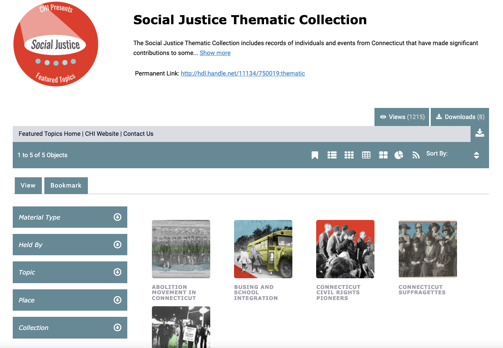
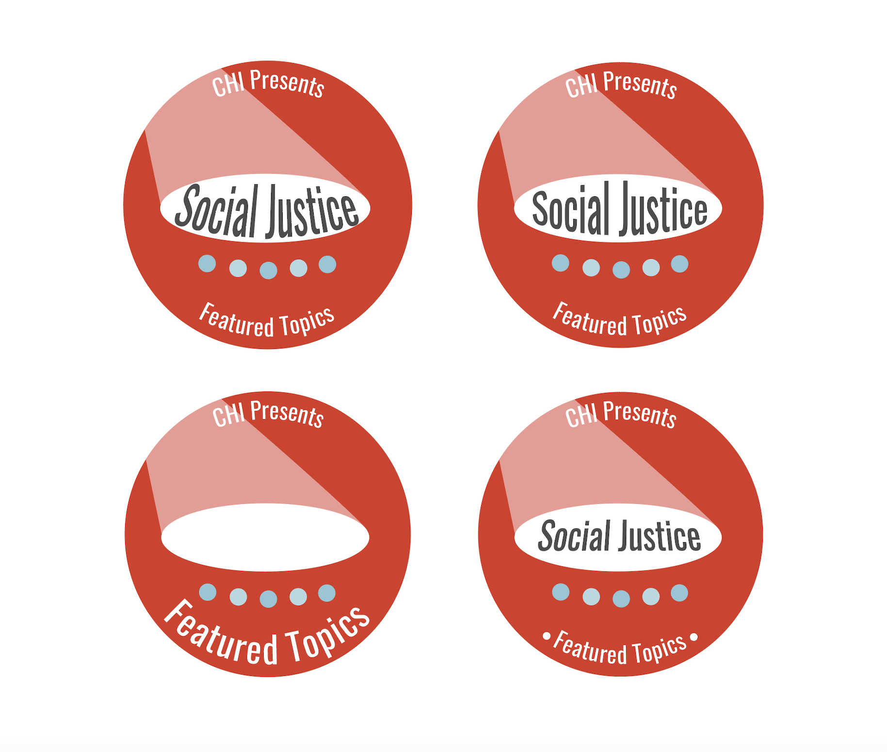

CTDA Social Justice Collection
Graphic Design | Logo Design

CTDA Social Justice Collection home page
The Connecicut Digital Archive is part of the Digital Preservation Repository Program at the University of Connecticut.
They serve the entire state and are dedicated to the maintenance, delivery, and preservation of a wide range of digital
resources for educational and cultural institutions and State Agencies in Connecticut.
For this project, the CTDA wanted to create thematic collections to highlight important content that was sometimes hidden or more difficult to find within the repository.
I was tasked with designing a logo for the project and then stylizing the thematic images in a compelling way.
When making the logo, the CTDA team and I talked about how we wanted to amplify certain collections, such as social justice and woman's suffrage. I wanted this idea
to translate in the logo, so I designed different variations primarily with a spotlight or sign. We then wanted the thematic collections to be called "featured topics" so that we could include more
content, but decided that a spotlight was a good way to combine both ideas. Using colors from the CTDA style guide, I built out many versions, before deciding on the final layout.
As a team, we then collaborated on the final details, including colors, layout, and font size. The final logo below will be used for each feature topic collection and
the word(s) in the spotlight we coincide with each collection.

Logo with slight variations
For the thumbnail images, I again used the colors from the CTDA style guide and overlayed them on certains parts of the images, for example, making the bus
yellow in the image below. These edits made the images stand out more within the collection and allowed the page to match the CTDA branding.

Photo after stylized edits
Continue to CTDA website